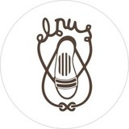
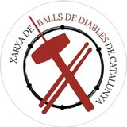

Disseny i enginyeria al servei de les teves idees
Construeixo webs i eines digitals a mida que combinen disseny, rendiment i funcionalitat per donar resposta a les necessitats del teu projecte.
De la idea al llançament
Disseny, desenvolupament, integracions, intel·ligència artificial, SEO i manteniment, amb un únic interlocutor durant tot el projecte.
Webs a mida
Webs a mida, cuidades i optimitzades per a mòbils, amb criteris de rendiment i SEO tècnic des del primer moment.
Eines de gestió quet'estalvien temps
Centralitzo la gestió de reserves, clients, alumnes i altres processos en un sol espai. Menys fulls de càlcul dispersos i més control.
Connecta elsteus sistemes
Connecto la teva web amb CRM, ERP, sistemes de pagament, reserves o mapes perquè les dades estiguin sincronitzades i es redueixin les tasques manuals duplicades.
Automatitza lestasques repetitives
Integro intel·ligència artificial quan aporta un benefici real, per exemple per classificar informació, preparar respostes o corregir exercicis. Automatitzacions pensades per estalviar temps i simplificar processos.
SEO tècnicper a l'era de la IA
Optimització tècnica, dades estructurades i contingut pensat per facilitar la comprensió del web als cercadors i als sistemes de resposta basats en IA.
Rendiment, seguretat imanteniment continu
Còpies de seguretat, actualitzacions verificades, monitoratge i suport directe per mantenir el web actualitzat, segur i estable.
Estratègia i contingutper a xarxes socials
Estratègia, creació de contingut i gestió de comunitats per reforçar la presència digital i connectar amb el públic adequat.

Festa Major 2026 🔥
Treballs seleccionats
Una selecció de projectes reals: web, eines internes, producció audiovisual, disseny...
Estela English Academy
Plataforma digital que integra el web corporatiu, el campus virtual i un panell de gestió interna. Centralitza la informació d'alumnes, professorat i pagaments, i incorpora un sistema de correcció automatitzada d'exercicis amb intel·ligència artificial.
Projecte privatFinances App
Aplicació per gestionar les finances personals amb estadístiques, categories personalitzables, seguiment de despeses recurrents i objectius d'estalvi.
Veure projecte →Joan Avilés Estudi d'Imatgeria
Web a mida per a l'escultor del Prat, especialitzat en imatgeria festiva i religiosa. Un espai per presentar la seva obra, el procés de creació de figures i els treballs de restauració del patrimoni.
Veure projecte →Alyseu Consultores
Web corporativa per a una consultoria especialitzada en persones, estratègia i talent. Presenta els serveis de desenvolupament directiu, selecció i acompanyament executiu amb un disseny clar i professional.
Veure projecte →Ball de Diables del Prat
Renovació integral del web de l'entitat cultural, amb un disseny actual, una experiència d'usuari millorada i una identitat visual coherent amb el Ball.
Veure projecte →Finances App
Pàgina de presentació de l'aplicació de finances personals, amb informació sobre les funcionalitats, els plans de subscripció i les opcions per captar usuaris.
Veure projecte →Gestió i creixement
Estratègia de contingut i gestió de comunitat


Festa Major del Prat
Producció de vídeos per donar visibilitat a les xarxes
Mirada personal
Moments, llums i textures del món que m'envolta.


Disseny & Branding
Materials gràfics per a esdeveniments i entitats culturals.


Creador multidisciplinari que fusiona art i tecnologia.